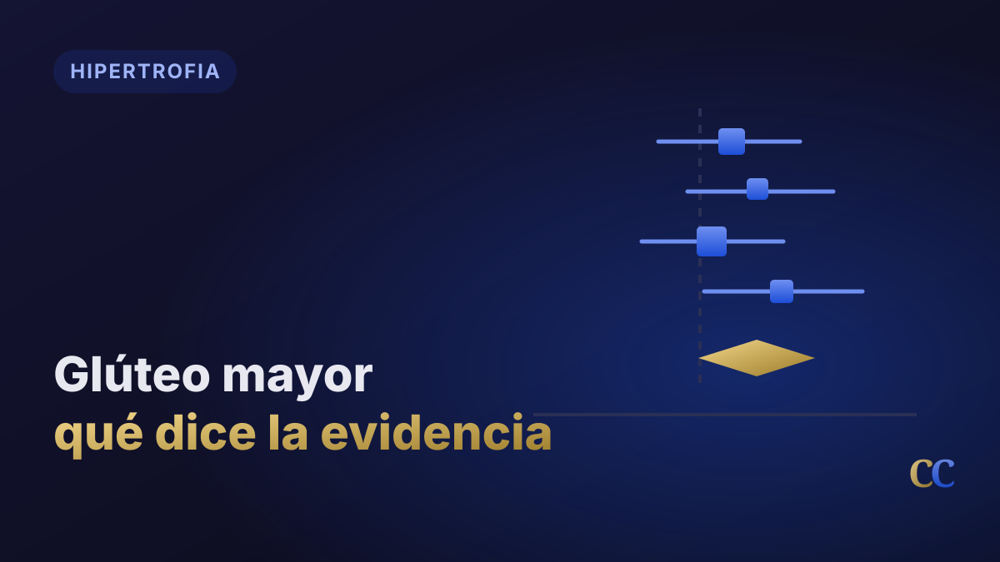

Hipertrofia del glúteo mayor: qué ejercicios funcionan según el meta-análisis 2025
Resumen
En 2025 se publicó en Frontiers in Physiology una revisión sistemática con meta-análisis que reunió toda la investigación disponible sobre hipertrofia del glúteo mayor medida con métodos de imagen. Doce estudios, 318 participantes, ecografía o resonancia magnética. Es, hasta hoy, la síntesis más ordenada que tenemos sobre el tema.
El resultado central es que el entrenamiento de fuerza produce un efecto moderado y consistente sobre el crecimiento del glúteo mayor. Y el hallazgo más útil para el gimnasio no es una jerarquía de ejercicios, sino algo más incómodo para el marketing fitness: varios ejercicios funcionan, y la pregunta relevante no es cuál es el mejor sino cuál corresponde a esta persona y a este objetivo.
Dicho eso, la revisión sí marca una diferencia concreta y aplicable: cuando el objetivo es estimular el glúteo sin desarrollar el cuádriceps en paralelo, el hip thrust con barra es la opción preferente. No porque active más, sino porque es más selectivo.
Qué se analizó exactamente
Antes de las conclusiones conviene mirar el filtro, porque explica por qué esta revisión es más confiable que la mayoría de lo que circula sobre glúteos.
- Solo estudios en adultos sanos de 18 a 45 años.
- Programas de mínimo 5 semanas de duración.
- Hipertrofia medida con ecografía o resonancia magnética, no con electromiografía ni con percepción de "activación".
- Ejercicios dinámicos de extensión de cadera con resistencia externa.
Este último punto merece una aclaración, porque es la fuente de confusión más común en el tema. Buena parte del contenido sobre glúteos se apoya en estudios de activación muscular (electromiografía): cuánta señal eléctrica genera un músculo durante un ejercicio. Ese dato es interesante, pero no equivale a crecimiento. Un ejercicio puede generar mucha activación y no producir más hipertrofia que otro. Esta revisión solo incluyó estudios que midieron el músculo antes y después con imágenes. Esa es la diferencia.
El resultado principal
El entrenamiento de fuerza produjo hipertrofia del glúteo mayor con un efecto moderado: SMD 0,71 (IC 95% 0,50–0,91; p < 0,00001), con baja heterogeneidad entre estudios (I² = 22%).
Traducido: el efecto es real, medible y bastante consistente entre investigaciones distintas. "Moderado" no significa poco — significa un cambio sólido a lo largo de semanas o meses, no una transformación.
Al separar por cómo se midió la hipertrofia, los números fueron:
- Volumen muscular (3 estudios): SMD 0,95 — efecto grande.
- Área de sección transversal (1 estudio): SMD 0,93 — efecto grande.
- Espesor muscular (7 estudios): SMD 0,61 — efecto moderado.
La diferencia entre medidas no es un detalle técnico menor: explica buena parte de las contradicciones entre estudios, como veremos con la prensa.
Protocolos que se usaron
Los estudios incluidos trabajaron dentro de estos rangos:
- Frecuencia: 1 a 3 sesiones semanales.
- Volumen: 3 a 12 series por sesión.
- Intensidad: 50–90% del 1RM, o 3–12RM.
- Duración: desde 5 semanas hasta 6 meses.
La variabilidad es tan grande que esta revisión no permite extraer una relación dosis-respuesta. No podemos decir "X series semanales es lo óptimo" a partir de estos datos. Sirven como rangos de referencia, no como prescripción.
Ejercicio por ejercicio
Hip thrust con barra: el más selectivo
Dos estudios lo entrenaron de forma aislada y ambos encontraron aumentos significativos del glúteo mayor. Pero el dato realmente relevante es otro: el hip thrust aumentó el glúteo sin incrementar significativamente el área de sección transversal de isquiosurales, aductores ni cuádriceps.
Eso es selectividad, y es lo que lo vuelve la herramienta indicada en escenarios concretos: atletas de categorías donde el desarrollo del cuádriceps debe regularse, personas que ya tienen suficiente estímulo de rodilla en su plan, o alumnos que no toleran cargar la rodilla.
Dos precisiones más:
- El rango completo superó al rango corto. Es un error frecuente: a medida que sube la carga, el rango se acorta y el estímulo cae.
- Las variantes hinge (buscar hiperextensión de cadera arriba) y scoop (retroversión pélvica, evitando hiperextensión lumbar) mostraron efectividad similar. Podés elegir según comodidad y control lumbar del alumno.
Además, un estudio comparó un programa con prensa inclinada + peso muerto rumano contra el mismo programa agregando hip thrust. El grupo que sumó hip thrust tuvo mayor aumento de espesor del glúteo. Es evidencia directa de que agregarlo aporta algo que los otros patrones no cubren.
Sentadilla con barra: funciona, y el rango importa
Cuatro estudios mostraron aumentos significativos del glúteo mayor con sentadilla. Los cuatro coincidieron en que el rango de movimiento condiciona el resultado:
- Rangos mayores produjeron más ganancia de volumen que limitarse a 90° de flexión de rodilla.
- Un estudio con 140° de flexión (rango completo) en mujeres con ~5 años de experiencia mostró aumento de espesor tras 3 meses.
- Sin embargo, llegar a paralelo parece ser suficiente. Otro estudio con rango paralelo también obtuvo aumentos significativos.
- Cuando se permitió "el máximo rango alcanzable por cada participante", el resultado siguió siendo significativo. Los autores concluyen que el rango debe individualizarse.
Y un dato en negativo que vale la pena: la sentadilla en máquina flywheel limitada a 90° no modificó el espesor del glúteo. No todas las variantes de sentadilla sirven igual.
Prensa: resultados contradictorios (y por qué)
Acá la evidencia se parte. Un estudio con resonancia magnética midiendo volumen encontró aumento significativo. Otro con ecografía midiendo espesor, con rango fijo de 90° en prensa a 45°, no encontró cambios. Un tercero encontró que la prensa hipertrofia el glúteo independientemente de si se agregan extensiones o flexiones de rodilla.
Los autores atribuyen la discrepancia a tres factores: el método de medición, el tipo de máquina (la biomecánica cambia entre modelos) y sobre todo el rango de movimiento, que en el estudio negativo estaba limitado a 90°.
Conclusión razonable: la prensa puede aportar, pero con rango restringido probablemente no sea un buen estímulo para el glúteo.
Extensión de cadera de rodillas con banda
Un estudio de 6 semanas encontró aumento significativo del espesor de las fibras superiores del glúteo mayor. Agregar restricción de flujo sanguíneo produjo ganancias adicionales.
Es un dato útil porque cubre una región distinta a la que estimulan sentadilla y hip thrust.
Peso corporal en principiantes
En mujeres previamente sedentarias, un programa de variantes de sentadilla con peso corporal y volumen progresivo produjo aumentos de espesor del glúteo comparables a los de la sentadilla con barra de alta intensidad.
No es un permiso para que todos entrenen sin cargas: es evidencia de que, en un punto de partida sedentario, el peso corporal bien progresado alcanza. Y valida el entrenamiento domiciliario o en rehabilitación como una entrada legítima.
El glúteo no se estimula de forma uniforme
Un hallazgo interesante: sentadilla y hip thrust produjeron aumentos más marcados en las fibras inferiores del glúteo mayor. La explicación propuesta es mecánica: ambos ejercicios trabajan predominantemente en el plano sagital.
En cambio, la extensión de cadera de rodillas con banda mostró efecto sobre las fibras superiores.
Es un dato que respalda tener más de un patrón en el programa. Pero conviene no sobreinterpretarlo: es evidencia preliminar y no justifica armar "días de glúteo superior".
Multiarticular, monoarticular, o los dos
Los protocolos con un solo ejercicio (SMD 0,74) y los combinados (SMD 0,68) dieron efectos moderados equivalentes. Ninguna estrategia fue superior.
Un estudio de 6 meses comparó tres grupos: solo multiarticulares (12 series), multiarticulares + monoarticulares (8 series) y solo monoarticulares (5 series). Los dos primeros lograron aumentos comparables — pero el grupo multiarticular hizo un 50% más de series.
Leído con cuidado: combinar multiarticulares con monoarticulares permitiría llegar a resultados similares con menos volumen. Es un dato de eficiencia, no de superioridad. Y como el volumen no estaba igualado, tampoco se puede atribuir limpiamente el resultado a la selección de ejercicios.
Otro estudio comparó un protocolo vertical (sentadilla, step-up, salto al cajón) contra uno horizontal (hip thrust, hiperextensión inversa, salto largo) durante 6 semanas. Ambos aumentaron el espesor del glúteo. El horizontal mejoró el salto horizontal; los dos mejoraron el vertical.
Aplicación práctica
Lo que se puede llevar al gimnasio mañana:
- Cargá extensión de cadera y progresá. Es lo que hicieron todos los protocolos que funcionaron. La progresión de carga sigue siendo el motor.
- Usá el rango más amplio que la persona controle. En sentadilla, paralelo alcanza. En hip thrust, buscá rango completo. No fuerces profundidades que no se estabilizan.
- Si querés glúteo sin cuádriceps, priorizá hip thrust o extensión de cadera monoarticular. Es el escenario donde la evidencia es más específica.
- Si querés tren inferior completo, sentadilla y prensa siguen siendo válidas. No son peores: son menos selectivas.
- Combiná patrones. Multiarticular + monoarticular permite llegar a lo mismo con menos series.
- En prensa, cuidá el rango. Restringida a 90° probablemente no aporte al glúteo.
- Para principiantes o entrenamiento en casa, variantes de sentadilla con peso corporal y progresión de volumen son un punto de partida legítimo.
Rangos de referencia según lo usado en los estudios: 2–3 sesiones semanales, 3–12 series por sesión para el complejo extensor de cadera, cargas del 50–90% del 1RM, sostenido un mínimo de 8–12 semanas antes de esperar cambios medibles.
Errores frecuentes
- Confundir activación con hipertrofia. Que un ejercicio "se sienta más" o dé más señal electromiográfica no significa que haga crecer más. Esta revisión solo miró estudios con imágenes.
- Acortar el rango del hip thrust cuando sube la carga. El rango corto rindió menos. Es preferible bajar el peso y completar el recorrido.
- Usar la prensa con rango limitado y esperar estímulo de glúteo. El estudio que no encontró cambios trabajaba con rango fijo de 90°.
- Apoyar todo el programa en un único ejercicio. El estímulo no es uniforme dentro del músculo; distintos patrones cargan regiones distintas.
- Forzar profundidad máxima en sentadilla sin control. Los autores insisten en individualizar el rango. Paralelo bien ejecutado supera a una profundidad que no se estabiliza.
- Pre-agotar cuádriceps antes de la prensa. Un estudio sugiere que hacer extensión de rodilla antes podría perjudicar la ganancia en glúteo. Es un solo estudio: tomalo como señal, no como regla.
Limitaciones: por qué no hay que sobreinterpretar esto
Este es el apartado que se suele omitir, y es el que define cuánta confianza corresponde.
- Solo 12 estudios y 318 participantes. Es un cuerpo de evidencia chico para sostener jerarquías entre ejercicios.
- 8 de 12 estudios usaron personas no entrenadas o desentrenadas. La transferencia a alumnos avanzados no está demostrada.
- Hallazgos sostenidos por un solo estudio. El subgrupo de área de sección transversal es un único trabajo. Lo del pre-agotamiento, también.
- Dos datos provienen de resúmenes de congreso, no de artículos completos revisados por pares. Peso de evidencia bajo.
- Volumen no igualado en la comparación de multiarticulares vs. combinados.
- Métodos de medición distintos (ecografía vs. resonancia) que no miden lo mismo.
- Población de 18 a 45 años y sana. No se extrapola directo a adultos mayores ni a población clínica.
Nivel de confianza razonable: moderado para el efecto global del entrenamiento de fuerza sobre el glúteo; bajo a moderado para las comparaciones entre ejercicios.
Conclusión
El entrenamiento de fuerza hipertrofia el glúteo mayor con un efecto moderado y consistente. No existe un único ejercicio superior: sentadilla, hip thrust, prensa y extensiones de cadera monoarticulares producen aumentos significativos, solos o combinados.
Donde la evidencia sí es específica es en la selectividad: el hip thrust con barra desarrolla el glúteo sin sumar cuádriceps, isquiosurales ni aductores. Eso lo convierte en la herramienta preferente cuando ese es el objetivo, y en un recurso valioso para quienes no toleran cargar la rodilla.
Y aparece de forma repetida una variable que suele quedar en segundo plano frente a la discusión de "qué ejercicio": el rango de movimiento. En sentadilla y en hip thrust, el rango condicionó el resultado. Con la aclaración importante de que el rango debe ajustarse a lo que cada persona controla, no maximizarse a cualquier costo.
Si tuviera que resumirlo en una línea para el día a día: importa más cómo ejecutás y cómo progresás que cuál ejercicio elegís de la lista de los que funcionan.
Preguntas frecuentes
¿Cuál es el mejor ejercicio para los glúteos?
El meta-análisis no identifica un ejercicio superior: sentadilla, hip thrust, prensa y extensión de cadera de rodillas produjeron aumentos significativos. Donde sí hay una diferencia clara es en la selectividad: el hip thrust con barra aumenta el glúteo mayor sin incrementar significativamente el cuádriceps, los isquiosurales ni los aductores. Si el objetivo es glúteo sin sumar cuádriceps, es la opción preferente.
¿Hay que sentadillar profundo para que crezcan los glúteos?
El rango de movimiento importa, pero llegar a paralelo parece ser suficiente. Los estudios muestran que rangos mayores superan a limitarse a 90° de flexión de rodilla, y que el rango debe individualizarse a lo que cada persona controla. Forzar profundidades que no se pueden estabilizar no tiene respaldo.
¿Cuántas series y con qué frecuencia entrenar el glúteo?
Los estudios incluidos usaron entre 1 y 3 sesiones semanales, 3 a 12 series por sesión y cargas del 50 al 90% del 1RM (o 3–12RM). No hay una relación dosis-respuesta clara dentro de esta revisión, porque los protocolos variaron demasiado. Esos rangos son un punto de partida razonable, no una prescripción.
¿Se puede desarrollar el glúteo entrenando en casa sin equipamiento?
En personas previamente sedentarias, variantes de sentadilla con peso corporal y volumen progresivo produjeron aumentos de espesor del glúteo comparables a la sentadilla con barra de alta intensidad. Es una entrada válida, sobre todo en contextos domiciliarios o de rehabilitación. En personas ya entrenadas ese dato no está demostrado.
¿Se puede entrenar el glúteo si no puedo hacer sentadillas?
Sí. El hip thrust, la extensión de cadera de rodillas con banda y otras variantes monoarticulares de extensión de cadera producen hipertrofia significativa sin la demanda de rodilla de la sentadilla o la prensa. Es una alternativa relevante en personas con artrosis de cadera, molestias de rodilla o limitación de movilidad.
Referencias
- Gama, E. F., et al. (2025). The impact of resistance training on gluteus maximus hypertrophy: a systematic review and meta-analysis. Frontiers in Physiology, 16, 1542334. PMID: 40276368.
- Plotkin, D., et al. (2023). Hypertrophic effects of the barbell hip thrust versus back squat. Journal of Sports Science.
- Kubo, K., Ikebukuro, T., & Yata, H. (2019). Effects of squat training with different depths on lower limb muscle volumes. European Journal of Applied Physiology, 119(9), 1933–1942.
- Barbalho, M., et al. (2020). Back squat vs. hip thrust resistance-training programs in well-trained women. International Journal of Sports Medicine, 41(5), 306–310.
- Kassiano, W., et al. (2024). Does adding the barbell hip thrust enhance gluteus maximus hypertrophy? Journal of Strength and Conditioning Research.
- Short, R., et al. (2021). Kneeling hip extension with varying band tension and blood flow restriction. Journal of Sport Rehabilitation.